Premier vol rapide
Dix étapes, du parking au parking. Chaque page est expliquée en détail plus bas.
- Allumer. Chargez le Concorde FXP et mettez la batterie 1 ou 2 sur ON : le MCDU s'allume (image d'accueil pendant 10 s). Pour l'afficher dans une fenêtre : Plugins > Concorde_NGR > Afficher / masquer MCDU.
- Préparer l'avion. DATA > INGENIEUR > SEQ ENGINEER FO > START PLANE COPILOT : appuyez deux fois en moins de 5 s. Le copilote et l'ingénieur préparent l'avion, puis font leur compte-rendu à la voix.
- Plan SimBrief. INIT > SIMBRIEF : entrez votre identifiant SimBrief en L1, puis INIT REQUEST (L6) pour récupérer le plan, INSERT F-PLN (R5) pour la route, et LOAD FUEL/PAX (R6) pour les passagers, le fret et le carburant. Le carburant est calculé par le NGR : il n'y a plus d'APPLY à faire dans le Colimata.
Sans SimBrief : INIT > FICHIERS .FMS, puis FMS LOAD. - Départ et arrivée. INIT > DEPARTURE (piste, SID), puis INIT > ARRIVAL (approche, STAR) et INSERT*. Vérifiez SPD KT/MACH et CRZ FL ; OPTI CRUISE ALT (magenta) donne le niveau conseillé.
- Vitesses de décollage. PERF : V1 / VR / V2, piste, masse et réglage CG/TRIM.
- Moteurs. SEQ ENGINEER FO > START ENGINE ENGINEER (deux appuis).
- Avant le décollage : engager GERE. Sur le ND, touchez GERE. Il ne fait rien tant que le pilote automatique n'est pas engagé. Le décollage se fait à la main.
- Après le décollage : engager le pilote automatique. Dès que l'AP est engagé, GERE prend la main sur la vitesse et la V/S et suit le profil jusqu'à la croisière. Avec l'option REHEAT AUTO, la réchauffe est allumée entre M1,0 et M1,7. Sous le FL100, la cible est 250 kt dès le décollage. En supersonique, GERE accélère collé à la VMO comme Air France : plein gaz, c'est la montée qui tient la vitesse, jusqu'à M1,7. Au toucher, GERE débraye les auto-manettes (message
AT DEBRAYEE (TOUCHER)). - En route. Page VOL (profil, relief, météo) et FUEL PRED (carburant restant à l'arrivée). GERE gère aussi la descente.
- Approche et parking. En option, ILS AUTO sur le ND règle tout seul la route du localizer dès que l'ILS est reçu : l'approche se fait alors sur l'ILS seul. Au parking : OFF ENGINE ENGINEER, puis OFF PLANE COPILOT.
Installation
Ce qu'il faut : X-Plane 12.4.4 ou plus récent uniquement, Windows 64 bits, Concorde FXP de Colimata version 3.53. X-Plane doit être fermé pendant l'installation.
Non compatible avec X-Plane 11 (le plugin utilise l'interface de X-Plane 12, et le Concorde FXP v3.53 requis est un avion X-Plane 12).
- Extraire tout le zip dans un dossier à part (pas directement dans X-Plane).
Conseil : avant d'extraire, clic droit sur le zip > Propriétés > cocher « Débloquer » > OK. Windows ne bloquera plus les .bat (voir Dépannage). - Lancer
installer\installer.bat. Il trouve X-Plane 12 etCONCORDE_FXP.acf, puis propose :
Il ajoute les profils d'aile, la tablette et l'écran du MCDU dans le cockpit, et sauvegarde l'original (Choix Usage 1 Installation automatique, ACF original exact (conseillé) 2 Forcer clé par clé (autre version, ou ACF déjà modifié) 3 Copier les fichiers seulement (vous modifiez l'ACF à la main) 4 Désinstaller 5 Quitter CONCORDE_FXP.acf.originalconcorde). Il propose ensuite de copier le pluginConcorde_NGRdansX-Plane 12\Resources\plugins: répondez O. - Démarrer X-Plane, charger le Concorde FXP, batterie 1 ou 2 sur ON : le MCDU s'allume.
Désinstaller
installer.bat choix 4. L'avion revient à l'identique de l'original. Détail de chaque modification : installer\LISTE_DES_MODIFICATIONS.txt.
Vérifier que ça marche
Dans X-Plane 12\Log.txt, cherchez Loaded Concorde_NGR.xpl et libcef.dll pret.
L'écran et les touches
Touches de ligne : 6 à gauche (L1 à L6) et 6 à droite (R1 à R6). Le texte à côté de la touche dit ce qu'elle fait : ouvrir une page (<SIMBRIEF, WIND>), basculer un choix (<ON) ou envoyer la saisie dans la ligne. Une touche sans fonction affiche NOT ALLOWED.
◀ ▶ (au-dessus des touches de page) : page précédente / page suivante, comme dans un navigateur.
Ligne d'état (tout en bas) : X-PLANE OK = liaison avec le simulateur ; FMS OK = liaison avec le plugin et le FMS X-Plane. HORS LIGNE signale un problème (voir Dépannage).

Touches de page
| Touche | Page |
|---|---|
| STATUT | État de l'avion : GEN, HYD, ECAM, ROUES, CABINE, AVION, METEO, FUEL PRED, JET |
| ND | Écran de navigation, boutons du pilote automatique et de GERE |
| VOL | Profil du vol, relief, météo, checklists |
| F-PLN | Plan de vol |
| PERF | Performances de la phase en cours |
| RAD NAV | Radios VHF, VOR, ADF, transpondeur |
| FUEL PRED | Prévision carburant |
| DIR | Direct vers un point |
| INIT | Préparation du vol |
| DATA | Index : options, SimBrief, carburant, fichiers .FMS, ingénieur |
| PROG | Progression du vol |
| ▲ ▼ | Page précédente / suivante d'une même page (1/2, 2/2…) |
| CLR | Efface la saisie, puis le message ; sur une saisie vide, écrit CLR pour effacer une valeur |
Saisir une valeur
- Tapez au clavier du PC : tout va dans la zone de saisie
[ ]en bas de l'écran. - Touchez la touche de ligne concernée (ex.
M2.02puis L1 sur INIT). - Une valeur refusée affiche
FORMAT ERROR: corrigez et recommencez.
Les couleurs
| Couleur | Sens |
|---|---|
| Blanc | Libellé |
| Bleu | Valeur modifiable ou action |
| Vert | Valeur mesurée ou validée |
| Magenta | Valeur calculée ou conseillée (OPTI CRUISE ALT, SPD GEREE) |
| Orange | À vérifier, alerte |
Les pages
Une section par page, dans l'ordre d'un vol.
INIT : préparation du vol
| Touche | Ligne | Rôle |
|---|---|---|
| L1 | SPD KT/MACH | Vitesse ou Mach de croisière : 350/, /0.93, 350/0.93, M2.02. CLR efface : l'avion vole alors au Mach du COST INDEX. Une vitesse saisie ici est toujours prioritaire sur le CI. |
| L2 | <SIMBRIEF | Ouvre la page SIMBRIEF. |
| L3 | <FICHIERS .FMS | Liste des plans .fms de X-Plane. |
| L4 | COST INDEX | 0 à 200, 100 = vol optimal : le plus vite que permet la température au nez (125 °C, 2 °C sous la TMO de 127 °C), selon l'air réel : environ M2,05 en atmosphère standard, M2,14 à −65 °C, jusqu'à M2,30 en air très froid. CI 200 = jusqu'à 127 °C ; plus bas = plus lent, jusqu'à M1,80 (CI 0). Affiche le Mach obtenu. CLR = 100. Touche vide = page MODE CROISIÈRE. |
| L5 | MODE CRZ | Mode de croisière : ASCENDANTE ou PALIER. La touche ouvre la page MODE CROISIÈRE. |
| L6 | <DEPARTURE | Piste et SID de départ. |
| R1 | FROM/TO | Départ / arrivée du plan (vert si chargé, orange si vide). |
| R2 | CRZ FL | Niveau de croisière, FL100 à FL650 (ex. FL580). Le sélecteur ALT du cockpit prend la même valeur. |
| R3 | FMS LOAD> | Chargement passagers / carburant pour un plan .fms. |
| R4 | WIND> | Vents du vol (voir ci-dessous). |
| R5 | ARRIVAL> | Approche, transition et STAR. |
| R6 | OPTI CRUISE ALT | Niveau conseillé (magenta). La touche ouvre le détail : masse, écart ISA, vent, meilleur Mach/FL subsonique et supersonique, distance par tonne et carburant à l'arrivée. Le niveau supersonique vient du tableau Air France de croisière ascendante (masse × écart ISA). * = valeur estimée (au sol ou sous 25 000 ft, l'ISA standard est supposée). |
WIND : trois pages, CLIMB WIND, CRZ WIND (un vent par point du plan, au niveau de croisière) et DESCENT WIND. Entrez un vent au format 270/45 sur la ligne voulue, CLR pour l'effacer. WIND REQUEST> remplit les vents automatiquement depuis la source choisie (SimBrief ou FMS X-Plane). Le vent réel mesuré est affiché pour comparer.
SIMBRIEF
| Touche | Ligne | Rôle |
|---|---|---|
| L1 | PILOT ID | Votre identifiant SimBrief (chiffres seulement). Il est mémorisé. |
| R1 | STATUT | OK, ATTENTE, ERREUR, RESEAU (pas d'internet). |
| R2 | RESET F-PLN> | Vide le plan du MCDU et le FMS X-Plane. Deux appuis en 5 s (le premier arme, en orange). |
| — | BLOCK NGB/SB | Carburant calculé par le NGR / carburant SimBrief (information). Si le calcul dépasse la capacité (95 t) : titre orange CARBU>CAPACITE (ou CARBU INSUFFISANT si la réserve ne suffit plus) et valeur 95.0 RES-x.x = réserve manquante. |
| — | MACH/FL | Mach et niveau du calcul NGR (orange si le vol reste subsonique). |
| — | ZFW/TOW · PAX/DIST | Masses, passagers, distance. |
| L5 | <WIND REQUEST | Charge les vents SimBrief. |
| R5 | INSERT F-PLN> | Insère la route. SID et STAR ne sont pas insérées : choisissez-les ensuite avec DEPARTURE / ARRIVAL. |
| L6 | <INIT REQUEST | Récupère votre dernier plan SimBrief. |
| R6 | LOAD FUEL/PAX> | Charge passagers et fret (SimBrief) et le carburant calculé par le NGR (SimBrief seulement si le calcul est impossible). Suivi 20 s : CHARGE (vert) ou A VERIFIER (orange). Au-delà de 95 t, 95 t sont chargées et le message orange CARBU > CAPACITE : RESERVE -x.xT s'affiche. |

FICHIERS .FMS
La liste des plans .fms de X-Plane, 6 par page (▲ ▼ pour défiler). Touchez un plan : il est chargé dans le MCDU et le FMS X-Plane. Le niveau de croisière est pris dans le fichier s'il y figure, les vents sont demandés à X-Plane, puis la page FMS LOAD s'ouvre.

FMS LOAD
| Touche | Ligne | Rôle |
|---|---|---|
| L1 | PAX | 0 à 100. |
| R1 | CARGO | 0 à 4,3 t. |
| — | ZFW/TOW · DIST/WIND | Masses (orange si trop lourd), distance et vent de face (HD) ou arrière (TL). |
| — | TRIP/RESERVE · MACH/FL | Carburant du trajet, réserve, Mach/FL du calcul. Réserves Air France (classeur TU2B) : dégagement 6,0 t, attente 30 min 6,4 t, réserve de route 5 %, roulage 1 t. |
| — | COMPUTED FUEL | Carburant calculé par le NGR. Au-delà de 95 t : même alerte orange que SIMBRIEF. |
| L5 | FUEL TO LOAD | Par défaut le calcul ; vous pouvez entrer 1 à 95 t. CLR revient au calcul. Le chargement ne dépasse jamais 95 t. |
| R4 | FUEL ONLY> | Charge seulement le carburant. |
| R5 | WIND REQUEST> | Redemande les vents. |
| L6 | <F-PLN | Ouvre le plan de vol. |
| R6 | LOAD> | Charge passagers, fret et carburant (même suivi que SimBrief). |
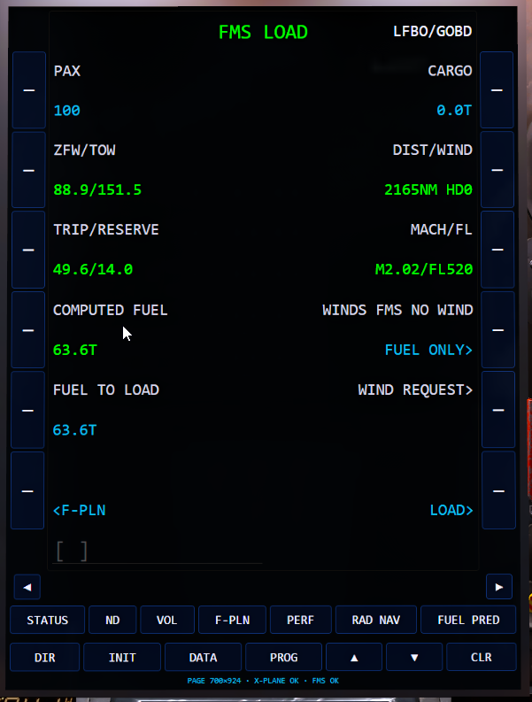
DEPARTURE / ARRIVAL
Depuis INIT, ou en touchant le premier / dernier point de F-PLN. Le choix se fait par étapes : touchez une ligne <… bleue, l'étape suivante s'affiche. ▲ ▼ font défiler la liste (4 lignes). La sélection apparaît en jaune en haut.
- DEPARTURE : piste ▸ SID (ou
NO SID) ▸ transition (ouNO TRANS). L1 revient aux pistes, R1 aux SID. L'origine du plan est placée au seuil de la piste choisie. - ARRIVAL : approche ▸ VIA (ou
NO VIA) ▸ STAR (ouNO STAR) ▸ transition. L1 revient aux approches, R1 aux STAR. - R6
INSERT*(orange) : insère dans le plan et le FMS X-Plane, puis ouvre F-PLN. L6<F-PLN: sortir sans insérer.

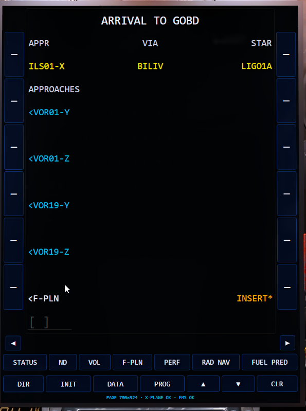
F-PLN : plan de vol
5 points par page (▲ ▼). Pour chaque point : cap et distance depuis le précédent, voie (airway, SID…), altitude ou contrainte, heure de passage calculée avec les vents. > marque le point actif. En bas : destination, heure d'arrivée, distance restante et EFOB (carburant à l'arrivée).
| Action | Effet |
|---|---|
| Touche gauche, saisie vide | Copie le nom du point dans la saisie. 1er point : DEPARTURE ; dernier : ARRIVAL. |
Touche gauche + NOM | Insère ce point (VOR, NDB, fix, aéroport) avant la ligne. |
Touche gauche + DEL / CLR | Supprime le point. |
| Touche droite + contrainte | +5000 (au-dessus), -FL100 (au-dessous), FL170/FL150 (entre), 250/FL080 (vitesse/altitude), 580 = FL580. Contrainte en magenta ; CLR l'efface. |
| L6, saisie vide | Ouvre DIR TO. |
L6 + NOM | Ajoute le point avant la destination. |
Plan vide : la page propose <SIMBRIEF, <FICHIERS .FMS, ou de taper DEPART/ARRIVEE en L4 (ex. LFPG/KJFK).

DIR TO
La liste des points restants avec leur distance : touchez-en un pour un direct, envoyé aussi au FMS X-Plane.
Vous pouvez aussi taper un nom en L1 : s'il est dans le plan, direct dessus ; sinon il est cherché dans la base, inséré avant le point actif, puis direct.
Messages : DIR TO X (vert) = fait ; FMS NON SYNCHRO (orange) = vérifiez le FMS X-Plane.
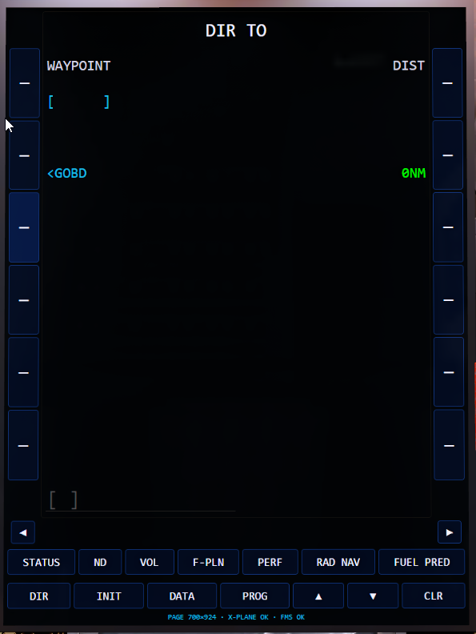
PERF : performances
PERF ouvre la phase en cours. <PHASE / PHASE> (L6 / R6) passent de l'une à l'autre : TAKE OFF ▸ CLB ▸ CRZ ▸ APPR.
TAKE OFF : la piste la plus longue est choisie seule (LONGEST) ; R1 ouvre DEPARTURE pour en changer.
| Touche | Ligne | Rôle |
|---|---|---|
| — | V1 / VR / V2 | Vitesses de décollage calculées. |
| R1 | TORA / ELEV | Longueur de piste disponible et altitude. |
| R2 | TOW / MTOW RWY | Masse au décollage / masse maximale pour cette piste (orange si dépassée). |
| R3 | ASD / TOD REQ | Distances d'accélération-arrêt et de décollage nécessaires. |
| L4 | OAT/QNH | Source X-Plane ou METAR. Saisie 12/1013 ; CLR = auto. |
| R4 | WIND | Vent de la piste, 270/15 ; CLR = auto. |
| L5 | RWY | Bascule piste SECHE / MOUILLEE. |
| R5 | V1 MIN/MAX | Fourchette de V1 ; PISTE COURTE si impossible. |
| L6 | <CG/TRIM | Masse, centrage %MAC, nez 5° / 4 réchauffes ON, trim carburant TAKEOFF, repères ASI, rappels (250 kt ASAP, réchauffe OFF à 2-3 000 ft). |
Message orange DECOLLAGE LIMITE : PISTE TROP COURTE si la masse est trop forte pour la piste.

CLB (montée)
| Touche | Ligne | Rôle |
|---|---|---|
| L1 | SPD/MACH | Vitesse / Mach gérés. |
| R1 | MAN SPD CLB | Vitesse de montée imposée, 250 à 500 kt ; vide ou CLR = géré. |
| — | PALIER FIXE | Palier subsonique et passage en supersonique (ex. FL290 M0.95>…). |
| — | TRIM CARBU · CG ACT | Mode du trim carburant, centrage réel. |
| — | CONSIGNE · REHEAT MAX | Conseil de la phase ; réchauffe 15 min max. |
| — | CRZ · V/S / THR | Mach/FL de croisière ; loi de V/S et de poussée en cours. |
CRZ (croisière)
| Touche | Ligne | Rôle |
|---|---|---|
| L1 | OPTI MACH CRZ | Mach optimal. Saisir FL560 change le niveau. |
| R1 | OPTI CRUISE ALT | Niveau optimal (magenta). Touche vide = adopter ce niveau ; FL560 = imposer. |
| R2 | DIST | Distance restante ; la touche ouvre le détail OPTI CRUISE ALT (dont la touche R3 MODE CRZ ouvre la page MODE CROISIÈRE). |
| — | FOB/GW · EFOB/RES | Carburant, masse ; carburant à l'arrivée / réserve. |
| — | ACT FF/AUTON · TRIP EST · MOY FF/TEMPS | Débit actuel et autonomie, trajet estimé, débit moyen et temps de vol. |
APPR (approche) : VAPP (avec correction de vent), VLS, masse à l'atterrissage (orange au-dessus de la MLW), destination et approche, nez 12,5° / visière basse, assiette ~10° en approche et ~12° au toucher, trim carburant LANDING, rappels 60 ft THR IDLE et REVERSE au toucher.
MODE CROISIÈRE
Accès : INIT touche L5 (ou L4 vide), ou PERF CRZ > OPTI CRUISE ALT touche R3. Compare, du point actuel jusqu'à la descente (montée restante et vent compris), le temps de vol, le carburant et le carburant à l'arrivée (EFOB, orange sous les réserves) :
| Touche | Ligne | Rôle |
|---|---|---|
| L2 | <ASCENDANTE TU2B | Croisière ascendante à la vitesse optimale (M2, ou moins si l'air est chaud ou l'avion lourd). Valeurs tirées du tableau réel Air France (classeur TU2B, 11.35.20). Le niveau du plan monte tout seul de 10 en 10 au fil de l'allègement ; le profil vertical et le T/D suivent. |
| L3 | <PALIER | Reste au niveau du plan (imposé par le contrôle par exemple) : la montée automatique est coupée. * = valeur estimée. |
| — | ECART PALIER/ASC | Carburant et minutes de plus (ou de moins) en palier. |
| L5 | COST INDEX | CI 0–200 et Mach obtenu (comme INIT L4). |
| R5 | ETA / HEURE ARR | Heure d'arrivée avec ce CI (orange si l'EFOB passe sous les réserves). Saisir une heure voulue, ex. 1745 : le MCDU choisit le CI le plus bas qui arrive à l'heure. Impossible même à CI 200 = message orange. |
| L6 / R6 | <OPTI · ECART CI/100 | Retour au détail OPTI CRUISE ALT · minutes et tonnes de plus ou de moins que CI 100. |
Le mode affiché est toujours l'état réel : saisir un niveau à la main sur PERF CRZ passe en PALIER ; touche vide sur OPTI CRUISE ALT repasse en ASCENDANTE.
Le meilleur Mach/niveau subsonique (survol des terres) reste affiché sur OPTI CRUISE ALT.
Sélecteur ALT = autorisation du contrôle (comme sur l'A320). Le profil géré ne dépasse jamais le sélecteur. Le MCDU ne l'écrit que dans deux cas : un niveau saisi dans le MCDU (INIT CRZ FL, PERF CRZ), et le COPILOTE ALT ci-dessous.
COPILOTE ALT (OPTIONS > MODE GERE, ON par défaut) : comme un copilote, le MCDU affiche lui-même au sélecteur la limite de chaque étape, une seule fois par étape (jamais en boucle), avec le message COPILOTE : ALT 6000 (CSTR xxx). Vous la voyez au sélecteur ; si vous le tournez, c'est votre clairance et le copilote n'y touche plus jusqu'à la phase suivante (montée, croisière, descente).
| Étape | Le copilote affiche |
|---|---|
| Montée (après le décollage, AP engagé) | La prochaine contrainte « au plus » du SID (ex. 6000 au départ de Londres) ; une fois le point passé, la suivante ; sinon le CRZ FL (seulement si le sélecteur est plus bas). |
| Croisière ASCENDANTE | FL600, plafond de la montée de croisière (seulement si le sélecteur est plus bas). |
| Descente (TOD) | La prochaine contrainte « au moins » de la STAR ou de l'approche ; une fois le point passé, la suivante ; puis l'altitude du premier point d'approche. |
Contrainte du SID levée par le sélecteur : en montée, si vous tournez le sélecteur au-dessus d'une contrainte « au plus » du SID (−, @ ou entre deux), elle est effacée du F-PLN (message CSTR SID LEVEE (ALT SEL)) et la montée reprend : c'est la clairance du contrôle. Conseil : affichez le CRZ FL (un ALT plus haut que le CRZ FL devient le CRZ FL). Une valeur réglée au sol ne lève rien. Les contraintes STAR, approche et « au moins » ne sont jamais levées ainsi (touche droite du point + CLR sur la page F-PLN).
Le sélecteur fixe ensuite les limites :
- Montée : ALT sous le CRZ FL (ex. « restez FL250 ») = palier à cet ALT, message
ALT PILOTE FL250 < CRZ FL…. Remontez l'ALT pour reprendre la montée. - Croisière : un nouvel ALT devient le CRZ FL, mode PALIER. En ASCENDANTE, un ALT plus haut sert de plafond : affichez par ex. FL600, l'avion monte seul de 10 en 10 jusqu'à ce niveau au plus. Sinon, message
MONTEE CROISIERE : MONTER ALT SEL. - Descente : l'avion ne descend pas sous l'ALT affiché.
INIT 2/2 (flèches haut / bas depuis INIT) : <FMS X-PLANE > MCDU (reprend le plan du FMS X-Plane), état FMS EN LIGNE / HORS LIGNE, puis OPTIONS RELIEF>.
Consommation supersonique. Au-dessus de Mach 1, le débit carburant est calculé depuis la poussée réelle et la consommation spécifique de l'Olympus 593, corrigée de la température. Il est recalé sur les tableaux Air France et visible aux débitmètres (rien de caché). FUEL PRED, PROG et OPTI utilisent le même calcul.
Vitesse maximale : la température au nez. Comme sur le vrai Concorde, la limite est la TMO de 127 °C (classeur TU2B), calculée avec l'air extérieur réel : en air froid on peut aller plus vite que M2. L'aiguille de Mach maximal du machmètre est placée à M2,40 et la température totale affichée au cockpit est celle calculée par le NGR (celle du Colimata ne dépendait que du Mach). Alarme du MCDU : orange T NEZ PROCHE TMO à 126,5 °C, rouge TMO DEPASSEE : REDUIRE MACH à 127 °C. La VMO reste celle du Colimata (535 kt en haute altitude). Au-dessus de M2,03, si le Colimata coupe sa poussée (son ancien plafond vers M2,02-2,20), le NGR la continue. N'appuyez pas sur AP MAX CRUISE (il plafonne le Colimata à M2,02) : la checklist CRUISE demande AP MAX CRUISE.....OFF.
PROG : progression du vol
La phase en cours dans le titre (PREFLIGHT, TAKE OFF, CLIMB, CRUISE, DESCENT, APPROACH). Lecture seule, sauf R5.
| Ligne | Contenu |
|---|---|
| CRZ · ALT ACT | Niveau de croisière ; altitude actuelle. |
| TO · DIST/TIME | Prochain point, distance et heure de passage. |
| DEST · DIST/ETA | Destination, distance restante et heure d'arrivée. |
| MACH/GS · V/S | Mach, vitesse sol, vitesse verticale. |
| SAT/UTC | Température extérieure, heure UTC. |
| R5 SPD GEREE | Bascule la vitesse gérée ON (magenta, avec la cible) / OFF. ON : l'auto-manette tient la vitesse du profil (IAS HOLD / ACQ). |
| VENT REEL · VENT PREVU | Vent mesuré ; vent prévu au prochain point. |
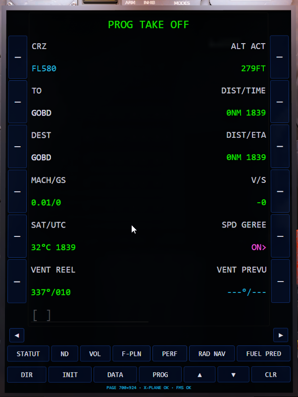
FUEL PRED : prévision carburant
| Ligne | Contenu |
|---|---|
| AT · UTC/EFOB | Destination ; heure d'arrivée / carburant à l'arrivée (orange sous la réserve). |
| GW · FOB | Masse totale ; carburant à bord (t). |
| TRIP/TIME · DIST | Carburant et temps du trajet ; distance restante. |
| RTE RSV/ALTN | Réserve de route / carburant de dégagement. |
| DIST REST PRED · LIVE | Marge de distance au-delà de la destination, prévue et selon la consommation actuelle (vert si positive, orange si négative). |
| DIST POSS/AUTON | Distance franchissable et autonomie. |
| LW FCST/MLW | Masse prévue à l'atterrissage / masse maximale (orange si dépassée : pensez au JETTISON). |
| R6 JETTISON> | Ouvre la vidange (orange pendant une vidange). |
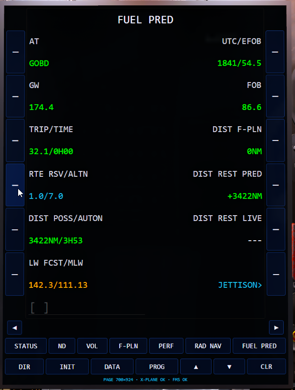
JETTISON : vidange carburant
Calcule le carburant à vidanger pour atterrir sous la MLW (111,1 t) sans toucher au carburant du reste du vol et des réserves. Le schéma montre chaque réservoir. La vidange se fait hors nourrices, au prorata, donc le centrage bouge peu ; arrêt automatique à la cible.
| Bouton | Effet |
|---|---|
| AUTO TARGET (MLW) | Cible automatique : atterrir à la MLW. |
| MANUAL DUMP · DUMP −1T / +1T | Quantité choisie à la main (plancher 5 t à bord). |
| 1.5 T/MIN | Débit : 0,5 / 1 / 1,5 / 2 / 3 t/min. |
| START | Deux appuis en 5 s. Interdit au sol. |
| STOP | Arrête la vidange. |
| ◄ FUEL PRED | Retour. |
À droite : FOB, TO DUMP, TARGET, quantité déjà vidangée, EFOB à destination, LW prévue, débit et temps restant.
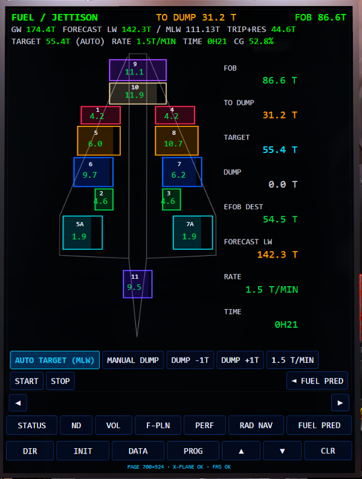
RAD NAV : radios
| Touche | Ligne | Rôle |
|---|---|---|
| L1 / L2 | VHF1 / VHF2 ACTIVE <SWAP | Touche vide : échange active / attente. Avec une fréquence : la met en attente. |
| R1 / R2 | WAITING | Fréquence d'attente : 118.705 ou 18705 (118,000 à 136,990). |
| L3 / R3 | VOR1 / VOR2 | Fréquence (108.00 à 117.95) ou identifiant (ex. TOU : balise la plus proche). Ident et DME affichés. |
| L4 / R4 | CRS1 / CRS2 | Route des sélecteurs VOR/LOC. |
| L5 / R5 | ADF1 / ADF2 | Fréquence ADF (ex. 375). |
| L6 | <SURV | Page transpondeur / TCAS : code SQWK, STBY / ALT / TA / TA-RA, IDENT, filtres ABV / NORM / BLW / ALL, portée. |
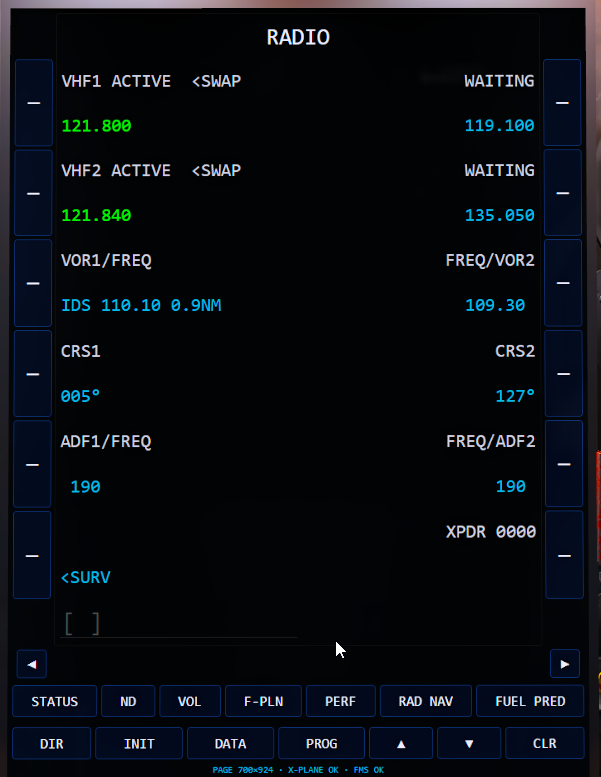
ND : écran de navigation et pilote automatique
En haut : niveau OPTI conseillé, contrainte active (CSTR), T/D, destination et heure, portée, mode du trim carburant ; à droite altitude et cap sélectés.
| Bouton | Effet |
|---|---|
| ARC / ROSE / PLAN | Change le mode d'affichage. En PLAN, ◄ PT / PT ► passent d'un point du plan à l'autre. |
| RNG− / RNG+ | Portée (aussi à la molette de la souris). |
| CSTR · TFC · VOR1 · VOR2 · ADF · ILS | Affiche les contraintes, le trafic, les aiguilles VOR/ADF, la rose ILS. |
| WPT · VOR.D · NDB · ARPT | Comme sur Airbus : points (portée 40 NM ou moins), VOR / VOR-DME / DME, NDB, aéroports autour de l'avion (magenta). ARPT ne montre que les terrains où le Concorde peut se poser à sa masse actuelle (nos performances : 2 438 m à 111 t au niveau de la mer) ; en gris = posé d'urgence seulement (piste ≥ 2 500 m). |
| DIR TO · SURV · VOL | Raccourcis vers DIR TO, la page transpondeur/TCAS et la page VOL. |
Au milieu : les alarmes (ALARM, en rouge/orange) et la checklist de la phase (◄ ▶ pour changer de liste, ✔ pour valider ; les lignes se cochent seules quand l'avion le confirme).
En bas, le pilote automatique (chaque bouton commande le vrai bouton du Colimata et s'allume avec son voyant) :
| Bouton | Effet |
|---|---|
| AP1 · AP2 · AT1 · AT2 · FD | Pilotes automatiques, auto-manettes, directeurs de vol. |
| ACQ · IAS · MACH | IAS ACQ, IAS HOLD, MACH HOLD. Au sol, l'auto-manette n'est pas engagée avec ces modes (sécurité : elle mettrait plein gaz). |
| LAND | Atterrissage automatique. |
| ILS AUTO | Option : règle tout seul la route du localizer dès que l'ILS est reçu ; l'approche se fait alors sur l'ILS seul. |
| WX | Affiche le radar météo du cockpit derrière le ND (portée = sélecteur du radar). |
| GERE | Mode géré : vitesse + V/S selon le profil, de la montée à la descente. À engager avant le décollage : il agit dès que l'AP est engagé (au-dessus de 1 000 ft sol). Le texte à droite donne la cible (SPD, ALT, V/S, segment). Sous le FL100 : 250 kt (aussi en remise de gaz). Au toucher : auto-manettes débrayées. |

VOL : profil du vol
En haut (briefing) : phase, FL, Mach, vitesse sol ; route, distance et temps restants, ETA, TOD, FOB ; temps de réchauffe utilisé (sur 15 min), vent, niveau de transition ; distances TERRE / MER et distance supersonique ; checklist en cours et suivante. Le prochain événement clignote moins de 2 min avant.
Le profil : montée, palier, Mach (repères M0.95, M1.3, M1.7…), croisière et descente prévus, position réelle de l'avion, relief sous la route, nuages et orages (CB), bande terre / mer en bas.
| Bouton | Effet |
|---|---|
| PROFIL · RELIEF · METEO | Affiche / cache le profil prévu, le relief, la météo X-Plane. |
| RESET | Remet zoom, partage de l'écran et tailles d'écriture par défaut. |
| ✈ AVION | Le profil zoomé suit l'avion (sinon profil libre). |
| WPT · VOR · APT · REPERES · CHECKLIST | Affiche les points, VOR, aéroports, repères de la séquence, checklist. |
| SON | Coupe / remet toutes les alertes sonores. |
| SURV · ND | Raccourcis. |
Souris : molette = zoom autour du curseur ; la barre ⇕ partage profil et briefing ; le briefing défile à la main ; molette sur le texte = taille d'écriture.

STATUT : état de l'avion
Des onglets en bas de l'écran. La plupart des pages sont en lecture seule, façon ECAM : vert = normal, ambre/orange = anomalie, cyan = unités.
| Onglet | Contenu |
|---|---|
| GEN | Les 4 moteurs : N1 (cadrans), N2, EGT, débit, réchauffe. En tête : train, nez, masse, FOB, débit total, centrage (et limites), réchauffes. |
| HYD | Circuits VERT / BLEU / JAUNE : pression, pompes moteur (VERT 1-2, BLEU 3-4, JAUNE 2-4), réservoirs, température. |
| ECAM | Trois sous-pages ELEC AC, ELEC DC, INS. Elles sont cliquables : GND PWR, sélecteurs des voltmètres AC/DC, batteries A/B, modes des 3 INS (OFF / STBY / ALIGN / NAV / ATT, AUTO / MAN). |
| ROUES | Pneus, températures des freins, accumulateur, pressions, frein de parking, trappes de train, roulette de nez. |
| CABINE | Plan de la cabine : passagers, portes, soutes, ceintures, non-fumeur, température et altitude cabine, trappes. |
| AVION | L'avion vu de dessus : train, nez, inverseurs, carburant, centrage. |
| METEO | Départ et arrivée : METAR, vent dessiné sur les pistes, pistes utilisables par le Concorde (BEST = la meilleure, COURTE en orange), QNH, température, visibilité. |
| FUEL PRED · JET | Raccourcis vers FUEL PRED et JETTISON. |
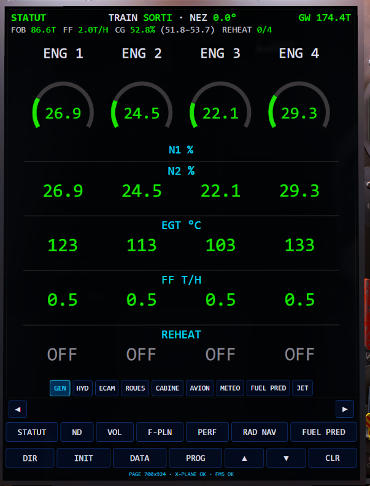


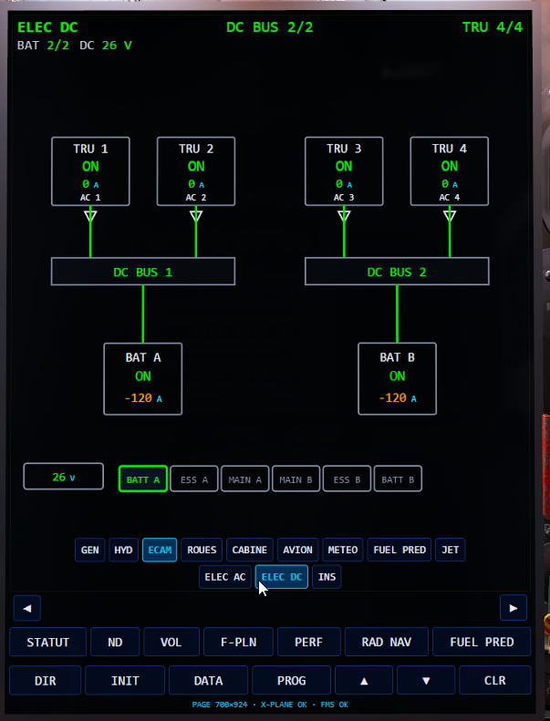
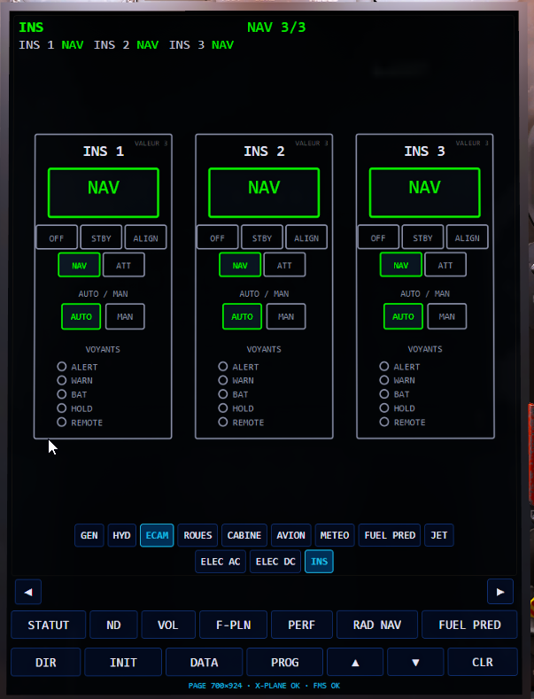

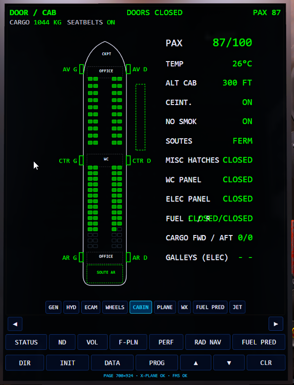

DATA et INGENIEUR
DATA INDEX 1/2 : à gauche OPTIONS, SIMBRIEF, CARBURANT, FICHIERS .FMS, INGENIEUR ; à droite les raccourcis DIRECT TO, FLIGHT PLAN, PERFORMANCE, RADIO NAV, FUEL PRED, INIT. 2/2 (▼) : POSITION MONITOR (latitude, longitude, vitesses, cap, altitude, Mach).
INGENIEUR :
| Ligne | Rôle |
|---|---|
| <INGENIEUR CARBU | Mode du trim carburant du Colimata : GROUND, TAKEOFF, FLIGHT, DESCENT, LANDING, MANUAL (* = mode actif). MODE AUTO ON : le mode suit la phase de vol. SUIVI PANNEAU : suit les transferts avant / arrière. |
| <SEQ ENGINEER FO | Équipage virtuel : START PLANE COPILOT / OFF PLANE COPILOT (préparation et arrêt de l'avion), START ENGINE ENGINEER / OFF ENGINE ENGINEER (moteurs). Deux appuis en 5 s pour chaque séquence. Le copilote et l'ingénieur annoncent leurs gestes et font un compte-rendu à la voix. |
| <CG / POUSSEE | Module aérodynamique du plugin : CENTRAGE AUTO (centrage simulé, élevons ramenés à 0 au-dessus de M1,0) et POUSSEE REELLE (poussée Concorde jusqu'à M2), ON / OFF. Affiche recul simulé, élevons, transfert, poussée max, poussée moteurs / entrée d'air, poussée Colimata brute, finesse moyenne. |
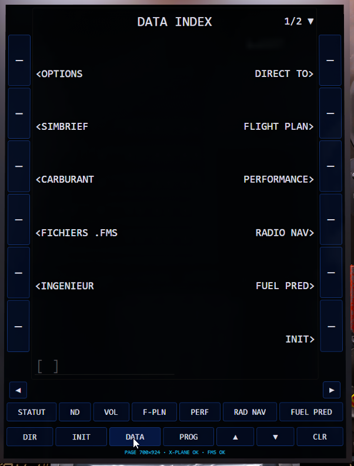
OPTIONS
Par DATA > OPTIONS ou ▼ depuis INIT. Les réglages sont mémorisés.
| Réglage | Effet |
|---|---|
| OPTIONS 1/2 | |
| LANGUE | FRANCAIS / ENGLISH. |
| UNITES | Altitude FT / M, piste FT / M, distance NM / KM (les FL ne sont jamais convertis). |
| OPTIONS METEO | Alerte turbulence ON / OFF et anticipation (min), seuil LEGERE / MODEREE, ceintures automatiques, météo sur la page VOL, turbulence prévue. |
| PROFIL VOL | VOL MACH : STANDARD (supersonique seulement au-dessus de la mer) ou BYPASS (partout) ; MARGE COTE 15 / 25 / 40 NM ; distances terre / mer de la route. |
| INGENIEUR AUTO | Trim carburant automatique selon la phase (ON / OFF). |
| MODE GERE | POUSSEE GEREE ON / OFF ; GERE (VNAV) ON / OFF ; INVERSEURS AUTO ; REHEAT AUTO : réchauffes 1 et 2 allumées à M1,0 en montée, éteintes à M1,7 ; si vous touchez vous-même aux réchauffes, l'AUTO se tait (état PILOTE) jusqu'au sol ; COPILOTE ALT ON / OFF (voir Copilote ALT). ; PA SELON VITESSE ON / OFF : inclinaison maximale du pilote automatique selon le Mach (30° à basse vitesse, 25° en subsonique haut, 20° en supersonique), réglable à droite (30/25/20) ; un message s'affiche à chaque changement ; ROLL PREDICTION ON / OFF et PRED SUB/SUP (10/17) : anticipation du roulis du pilote automatique selon le Mach (voir Pilote automatique). |
| OPTIONS 2/2 | |
| CREW VOICE | Voix ON / OFF, son 3D, choix des voix du copilote et de l'ingénieur, volume 0 à 100 %, écoute. |
| SONS | Alertes sonores ON / OFF. |
| RELIEF / METEO | Source du relief (GRILLE + X-PLANE / X-PLANE SEUL / ARRET), CORR VAPP (−20 à +40 kt), marge d'alerte sol (500 à 5 000 ft), état du relief et de la météo, effacer les routes en mémoire. |
| SIMGROUNDMAP | Affiche la carte SimGroundMap si elle tourne sur le PC (adresse 127.0.0.1:8073). |


Sommeil (MCDU caché)
Le MCDU dort quand :
- les batteries 1 et 2 sont sur OFF (écran noir) ;
- l'écran du cockpit est caché (Plugins > Concorde_NGR > Afficher / masquer l'écran du cockpit) ;
- l'avion chargé n'est pas le Concorde FXP (message
AVION NON CONCORDE FXP · MCDU EN VEILLE).
En sommeil, le MCDU n'agit plus sur l'avion : pas de pilote automatique géré, pas de vitesse gérée, pas de gestion du carburant, pas de JETTISON. Le module aérodynamique du plugin (poussée, traînée, centrage, conso) reste actif. Rallumez la batterie ou réaffichez l'écran pour le réveiller.
Mode puriste (sans MCDU)
Pour voler comme l'équipage de l'époque : navigation CIVA INS saisie à la main (9 waypoints) et carburant géré par vous-même, sans MCDU, en gardant le Concorde NGR (poussée, traînée, consommation, finesse).
- Activer : Plugins > Concorde_NGR > Mode puriste (sans MCDU). La coche s'applique tout de suite, sans relancer X-Plane, et reste mémorisée pour les vols suivants. Décocher : le MCDU revient environ 5 s après.
- Ce qui disparaît : l'écran et la fenêtre du MCDU et toutes ses fonctions (SimBrief, F-PLN, GERE, carburant, checklists, voix, ND, JETTISON).
- Ce qui reste actif : poussée réelle, traînée, consommation réaliste, centrage automatique simulé, amortisseur de tangage, aiguille de Mach à 2,40, VMO, température au nez, roll prediction.
- Voyant TMO : le master caution orange (pilote et copilote) s'allume quand la température au nez dépasse 127 °C et s'éteint sous 126 °C. Pas de voix.
Surveillance du FMS X-Plane
Le MCDU écrit son plan dans le FMS d'X-Plane, que suit le pilote automatique. Si un autre outil modifie ce FMS (contrôleur VATSIM / IVAO, ATC d'X-Plane, G1000, « direct to »…), le MCDU le voit :
- seul le point actif a changé (même plan) : message vert
DIR TO X-PLANE : X; le MCDU suit ; - le plan a changé : message orange
FMS X-PLANE MODIFIE (ATC ?)et une page qui compare les deux plans (nombre de points, point actif, dernier point).
| Touche | Effet |
|---|---|
| L6 <REPRENDRE | Adopte le plan X-Plane dans le MCDU. |
| R6 RENVOYER> | Garde le plan du MCDU et le renvoie au FMS X-Plane. |
Les envois du MCDU lui-même ne déclenchent pas l'alerte.
Pilote automatique
installer.bat modifie aussi 10 réglages du pilote automatique dans CONCORDE_FXP.acf (lignes acf/_ott_* : réponse en vitesse, en roulis et en tangage). Ce sont les réglages sur lesquels s'appuient les calculs du MCDU (mode GERE). Depuis la V1.1, ils sont inclus dans l'installation (plus de installer_pilote_auto.bat) ; la désinstallation (choix 4) les remet comme l'original. Valeurs avant / après : installer\LISTE_DES_MODIFICATIONS.txt.
En vol, le plugin adapte deux réglages selon le Mach, chacun réglable ON / OFF dans OPTIONS > MODE GERE (mémorisé, même sans afficher le MCDU) :
- PA SELON VITESSE : inclinaison maximale 30° à basse vitesse, 25° en subsonique haut, 20° en supersonique.
- ROLL PREDICTION : anticipation du roulis : valeur d'origine sous M0,60, 10 à M0,95, 17 au-dessus de M1,60 (réglable
PRED SUB/SUP). Au sol, la valeur d'origine est remise. Si vous changez vous-même la roll prediction dans la fenêtre des constantes d'X-Plane, le plugin n'y touche plus jusqu'au prochain sol. Expérimental : en cas de doute, mettez OFF.
L'écran dans le cockpit
installer.bat ajoute l'écran du MCDU dans le cockpit du Concorde (CONCORDE_FXP_cockpit.obj, sauvegarde .originalconcorde) et installe la tablette qui l'entoure. L'écran est affiché et cliquable directement dans le cockpit.
- Plugins > Concorde_NGR > Afficher / masquer l'écran du cockpit : montre ou cache l'écran. Le choix est mémorisé d'un vol à l'autre. Écran caché = MCDU en sommeil (voir Sommeil).
- Plugins > Concorde_NGR > Afficher / masquer MCDU : ouvre le MCDU dans une fenêtre X-Plane, en plus de l'écran du cockpit.
La désinstallation (installer.bat choix 4) remet le cockpit d'origine.
Dépannage
Menu du plugin : Plugins > Concorde_NGR.
| Problème | Solution |
|---|---|
| Windows bloque un .bat (« Windows a protégé votre ordinateur ») | Cliquez Informations complémentaires puis Exécuter quand même. Pour l'éviter : avant d'extraire, clic droit sur le zip > Propriétés > cocher Débloquer > OK. |
| L'antivirus met un fichier en quarantaine (.bat ou .xpl) | Restaurez-le et autorisez-le : ces fichiers ne contiennent rien de dangereux. |
| Le MCDU reste noir | Batterie 1 ou 2 sur ON. Vérifiez que l'écran du cockpit n'est pas caché (menu du plugin). Si le bas de l'écran affiche X-PLANE HORS LIGNE (API 8086) : la page ne lit pas X-Plane ; vérifiez qu'aucun pare-feu ou antivirus ne bloque X-Plane et ouvrez http://127.0.0.1:8086/api/capabilities dans un navigateur (X-Plane lancé) : une réponse doit s'afficher. |
Image NGR avec BATTERIE ILLISIBLE et un bouton START NGR | Le MCDU ne peut lire la batterie de l'avion (ni par le plugin, ni par X-Plane). Cliquez sur START NGR : le MCDU s'allume et reste allumé. Signalez-le sur Discord avec votre Log.txt. |
| Le MCDU n'apparaît pas du tout | Ouvrez X-Plane 12\Log.txt : il doit contenir Loaded Concorde_NGR.xpl et libcef.dll pret. Sinon, relancez installer.bat et vérifiez que Resources\plugins\Concorde_NGR\win_x64\Concorde_NGR.xpl existe. |
| Page figée ou vide | Recharger la page MCDU, au sol de préférence : en vol, le rechargement remet à zéro le guidage GERE, et X-Plane a déjà planté pendant un rechargement en vol (23/11/2026). |
X-PLANE HORS LIGNE ou FMS HORS LIGNE en bas de l'écran | Relancer le pont 8087 ; si rien ne change : Reinit complete (pont + page). N'installez jamais deux plugins MCDU ensemble (même port 8087). |
Le carburant n'est pas chargé (A VERIFIER) | Relancez LOAD FUEL/PAX ; vérifiez FOB sur FUEL PRED. |
| L'avion ne suit pas le plan du MCDU | Le FMS X-Plane a été modifié ailleurs : voir Surveillance FMS (RENVOYER). |
| GERE ne fait rien | L'AP doit être engagé, l'avion au-dessus de 1 000 ft sol, et le MCDU pas en sommeil. |
| Pas de son ou de voix | OPTIONS 2/2 : SONS = ON ; CREW VOICE : voix ACTIVE, volume. |
X-Plane 12\Log.txt (pris juste après le problème, avant de relancer X-Plane).Crédits
Concorde NGR, créé par pierre.r. Licence CC BY-NC 4.0.
Exception : les profils d'aile CONCORDE_DELTA1_NGR_V5 et CONCORDE_DELTA2_NGR_V5 sont sous licence CC BY 4.0 : réutilisation libre, y compris dans un add-on payant, à condition de citer « Concorde NGR – Pierre Romi ».
🙏 Remerciements
Un immense merci à Florian, créateur du Concorde FXP de COLIMATA : un passionné comme nous tous de ce merveilleux oiseau, qui a encore tant à donner.
Merci aussi à Austin Meyer, créateur d'X-Plane, sans qui vous ne pourriez absolument pas lire ce message : lui aussi un passionné, un mordu d'aviation.
Ils nous font rêver ; essayons de les emporter avec nous dans nos rêves, comme une grande communauté de passionnés.
Et merci à tous ceux qui m'ont été d'une grande aide dans cette passion folle, le plus grand virus de l'air dans l'air du temps : les pilotes !
Amitié à tous, car tous frères quelque part.
Historique des versions
| Version | Date | Changements |
|---|---|---|
| V1.0 | 11/11/2026 | Première notice complète : premier vol, toutes les pages, sommeil, surveillance FMS, option pilote auto, écran du cockpit, dépannage. |
| V1.1 | 20/11/2026 | Réserves Air France ; alerte carburant au-delà de la capacité (95 t) ; GERE : 250 kt au décollage, accélération supersonique collée à la VMO, auto-manettes débrayées au toucher ; vitesse maximale par la température au nez (TMO 127 °C, air réel), aiguille de Mach à 2,40, alarme TMO ; COST INDEX 100 = le plus vite que permet la température ; checklist CRUISE : AP MAX CRUISE OFF. ; COST INDEX 0–200 (100 = optimum, 200 = M2,04) avec heure d'arrivée voulue ; sélecteur ALT = autorisation du contrôle ; INIT 2/2 ; MODE CROISIÈRE et niveau OPTI selon le tableau Air France ; consommation supersonique calculée depuis la poussée ; ND : boutons WPT, VOR.D, NDB, ARPT (aéroports selon la masse) ; page OPTI réorganisée, valeurs seules centrées sur leur touche, code SQWK sous l'avion (SURV). 23/11 : COPILOTE ALT (le MCDU affiche au sélecteur la limite de chaque étape) ; contrainte du SID levée en tournant le sélecteur ; niveau OPTI selon le vent de chaque niveau (FL450-600, jet stream) et le COST INDEX (100 économie, 150 compromis, 200 vitesse) ; vent pris en compte jusqu'au FL530 ; redescente de croisière vers un meilleur vent avec l'ALT SEL ; plus de chute ni de cabré en croisière et au TOD (plugin) ; PA SELON VITESSE (inclinaison max 30/25/20°) ; ROLL PREDICTION selon le Mach (expérimental, ON/OFF) ; écran noir : batterie lue par le plugin + bouton START NGR de secours ; un seul installateur (réglages du pilote automatique inclus dans installer.bat). |
| V1.11 | 24/11/2026 | Correction : pages OPTIONS et GERE inutilisables en V1.1. |
| V1.2 | 27/11/2026 | Mode puriste (sans MCDU) dans le menu Plugins > Concorde_NGR, avec voyant TMO ; MAX CLIMB du pilote automatique Colimata de nouveau fonctionnel ; menu du plugin en français ou en anglais selon la langue d'X-Plane. |